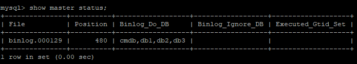

MySQL 读写分离在互联网项目中应该算是一个非常常见的需求了。受困于 Linux 和 MySQL 版本问题，很多人经常会搭建失败，今天给大伙举一个成功的例子。
CentOS 安装 MySQL
环境：
CentOS7
MySQL5.7
具体的安装步骤如下：
检查是否安装了 mariadb，如果已经安装了则卸载：1
yum list installed | grep mariadb
如果执行结果如下，表示已经安装了 mariadb，将之卸载：1
mariadb-libs.x86_64 1:5.5.52-1.el7 @anaconda
卸载命令如下：1
yum -y remove mariadb*
接下来下载官方提供的 rpm 包
如果 CentOS 上没有 wget 命令，首先通过如下命令安装 wget：1
yum install wget
然后执行如下操作下载 rpm 包：1
wget https://dev.mysql.com/get/mysql57-community-release-el7-11.noarch.rpm
下载完成后，安装rpm包：1
rpm -ivh mysql57-community-release-el7-11.noarch.rpm
检查 MySQL 的 yum 源是否安装成功：1
yum repolist enabled | grep "mysql.*-community.*"
执行结果如下表示安装成功：
安装 MySQL1
yum install mysql-server
安装完成后，启动MySQL：1
systemctl start mysqld.service
停止MySQL：1
systemctl stop mysqld.service
登录 MySQL：1
mysql -u root -p
默认无密码。有的版本有默认密码，查看默认密码，首先去 /etc/my.cnf 目录下查看 MySQL 的日志位置，然后打开日志文件，可以看到日志中有一个提示，生成了一个临时的默认密码，使用这个密码登录，登录成功后修改密码即可。
改密码
首先修改密码策略(这一步不是必须的，如果不修改密码策略，需要取一个比较复杂的密码，松哥这里简单起见，就修改下密码策略)：1
set global validate_password_policy=0;
然后重置密码：1
2set password=password("123");
flush privileges;
授权远程登录同方式一：1
2grant all privileges on *.* to 'root'@'%' identified by '123' with grant option;
flush privileges;
授权远程登录同方式二：
修改 mysql 库中的 user 表，将 root 用户的 Host 字段的值改为 % ，然后重启 MySQL 即可。
关闭防火墙 MySQL 要能远程访问，还需要关闭防火墙：1
systemctl stop firewalld.service
禁止firewall开机启动:1
systemctl disable firewalld.service
MySQL 读写分离环境搭建。
准备工作
我这里有一张简单的图向大伙展示 MySQL 主从的工作方式：
这里，我们准备两台机器：
主机：192.168.248.128 •从机：192.168.248.139
主机配置
主机的配置就三个步骤，比较容易：
1、授权给从机服务器1
2GRANT REPLICATION SLAVE ON *.* to 'rep1'@'192.168.248.139' identified by '123';
FLUSH PRIVILEGES;
这里表示配置从机登录用户名为 rep1，密码为 123，并且必须从 192.168.248.139这个地址登录，登录成功之后可以操作任意库中的任意表。其中，如果不需要限制登录地址，可以将 IP 地址更换为一个 %。
2.修改主库配置文件，开启 binlog ，并设置 server-id ，每次修改配置文件后都要重启 MySQL 服务才会生效1
vi /etc/my.cnf
修改的文件内容如下：1
2
3
4[mysqld]
log-bin=/var/lib/mysql/binlog
server-id=128
binlog-do-db = cmdb
如下图：
log-bin：同步的日志路径及文件名，一定注意这个目录要是 MySQL 有权限写入的（我这里是偷懒了，直接放在了下面那个datadir下面
binlog-do-db：要同步的数据库名，当从机连上主机后，只有这里配置的数据库才会被同步，其他的不会被同步
server-id: MySQL 在主从环境下的唯一标志符，给个任意数字，注意不能和从机重复。
配置完成后重启 MySQL 服务端：1
systemctl restart mysqld
3、查看主服务器当前二进制日志名和偏移量，这个操作的目的是为了在从数据库启动后，从这个点开始进行数据的恢复：1
show master status;

至此，主机配置完成。
从机配置
从机的配置也比较简单，我们一步一步来看：
1.在/etc/my.cnf 添加下面配置：
注意从机这里只需要配置一下 server-id 即可。
注意：如果从机是从主机复制来的，即我们通过复制 CentOS 虚拟机获取了 MySQL 实例 ，此时两个 MySQL 的 uuid 一样（正常安装是不会相同的），这时需要手动修改，修改位置在 /var/lib/mysql/auto.cnf ，注意随便修改这里几个字符即可，但也不可太过于随意，例如修改了 uuid 的长度。
2.使用命令来配置从机：1
change master to master_host='192.168.248.128',master_port=3306,master_user='rep1',master_password='123',master_log_file='binlog.000001',master_log_pos=120;
这里配置了主机地址、端口以及从机登录主机的用户名和密码，注意最后两个参数要和 master 中的保持一致。
3.启动 slave 进程1
start slave;
启动之后查看从机状态：1
show slave status\G;
4.查看 slave 的状态
主要是下面两项值都要为为 YES，则表示配置正确：1
2Slave_IO_Running: Yes
Slave_SQL_Running: Yes
至此，配置完成，主机创建库，添加数据，从机会自动同步。
如果这两个有一个不为 YES ，表示主从环境搭建失败，此时可以阅读日志，查看出错的原因，再具体问题具体解决。
原文链接：https://mp.weixin.qq.com/s/QapdsWt5KOi1L0JKX4B0pg